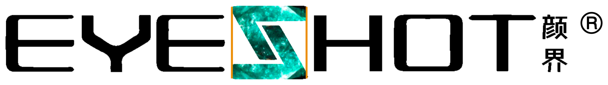

正在进入下一处空间…

光与石的艺术馆
THE MATERIAL MUSEUM
十个空间
整栋空间 ↗
连续漫游 →
纯净看图 ⤢
虚拟艺术馆 · 空间概念
＋
探索产品
↗
保存场景图
↓
−
100%
＋
↺
返回导览 ×
返回空间 ×
查看官网产品资料 ↗
空间画面为虚拟应用概念。结构细节、材料表现与项目配置以实物及深化资料为准。
实景与应用参考
查看原始资料 ↗
←
→
THE JOURNEY
沿着石与光，走进十个空间。
×
热熔天然石墙板系统 · 800 × 2400 mm
独立打开 ↗
返回 ×
一栋艺术馆 · 复原检查版
统一模型 · 复原检查版 / 场景效果图保留
返回场景 ×
正在载入统一空间…
建筑总览
切换屋顶
播放路线
恢复机位
图模对照 ↗
下载模型 ↓
拖动观察 · 双指缩放 · 固定机位串联同一建筑